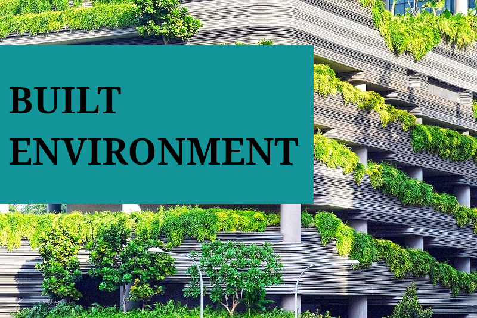

Home Page
This website's purpose is to describe 4 different digital technologies used in built environment, one for each design, construction, operation and maintenance. We covered the technologies purposes and its features, the impact it has as well as it's pros and cons. And we're going to take a look at some of the examples in case study involving described technologies and some challenges involved in implementing them.
Design
Building Information Modeling (BIM)
What is BIM?
Building Information Modeling (BIM) is a 3D modeling software design for engineers, architects and professionals in built environment to use throughout the construction project lifecycle. Unlike other 3D modeling software, BIM provides comprehensive and thorough detailed data about the model, giving users the ability to play around with the parameters and how it affects the entire building.
What is the purpose and feature of BIM?
In design context, BIM allows professionals to model a 3D Model of the building, associates it with data such as cost estimation from quantity and quality or geometric data about the building. Furthermore, BIM allows professionals to collaborate. For example, architects, engineers, project managers and even the owners can view the same model with their own devices remotely.
BIM Impact and advantages
By using BIM to model a detailed 3D model of a building and collaborate with stakeholders and professionals, coordination can be improved and errors can be reduced through enhanced information sharing and communication. Additionally, BIM provides visual input for that makes it easy for non-technical stakeholders to visualize and for professionals to explain.
Challenges faced when integrating BIM
During implementation of BIM in practical scenarios, there are expected to be some challenges that the professionals may face. Some of them are high initial cost, lack of collaboration, lack of professionals and lack of compatible contractual framework.
Example case for successful integration or challenges faced during the technology's adoption
According to Sina Moradi and Piia Sormunen in their research of Integrating lean construction with BIM and sustainability, some of the common challenges are high initial cost, lack of competent people, lack of relevant contract and delivery model to support collaboration among professionals and stakeholders. Client or stakeholders could not clarify benefit due to lack of long-term cost and benefit analysis may be the possible reason to the high initial cost. ("Integrating Lean Construction With BIM and Sustainability: A Comparative Study of Challenges, Enablers, Techniques, and Benefits," n.d.)
Construction
What problem does drones solved?
One of the purposes of drones during construction phase is for quality control and progress monitoring. Engineers can perform thorough inspection and detect defects by using drones to capture high-resolution imagery and data. Drones are equipped with high resolution camera and sensors and data processing capabilities. Consequently, inspectors can identify minor defect such as cracks and corrosion that might be missed during ground inspection.
Impact and advantages of using drones
Drones can improve time efficiency and cost efficiency. For example, traditional way of tracking and delivering materials is slow and might be error prone especially in areas with limited access. Therefore, drones can be used instead and can reduce the time and cost therefore improving the efficiency.
Challenges faced during integrating
However, there are still some challenges that's need to be solved. One of it is that drones has limited flight time and range due to its battery life. Covering large construction site or inspecting extensive infrastructure requires long flight duration that most commercial drones do not offer. This can hinder their overall operational efficiency as it requires frequent battery replacements and charging.
Example success or challenges in case study
Drone can also be used for safety monitoring. One of the construction projects in Santiago, Chile proves this by using drones to identify safety issues. During the study, the drone captured images that show issues such as lack of guardrails and worker without a safety rope. ((Choi, Kim, Kim, & Na, 2023)
Operation
What is IoT and Data analytics?
Internet of Things (IoT) is a network of interconnected physical devices such as sensors and vehicles that are embedded with software and network connectivity. Data analytics however is a process of examining that data to find patterns and gain insight. By combining both IoT and data analytics, professional can improve their operation process.
What and how does it solve the problem?
Building during operation nowadays are equipped with variety of sensors, actuators and dedicated network. Their purposes are to observes specific area and collect data associated with it. Appropriate rules are then applied accordingly to improve comfort and its functionality while saving energy.
Impact and advantages of using IoT and Data analytics
Several impact and advantages that IoT and data analytics provides during operation is enhancing energy efficiency. By combining intelligent management systems and massive data storage and analytics, the electrical devices on the grid can learn and adapt to new behaviors. Furthermore, IoT and data analytics can improve facilities management. It provides real-time access to building facilities for the staff. Consequently, it can improve certain aspect of the building such as health and comfort and reducing cost of repairs and energy consumption.
Challenges when integrating IoT and Data analytics
There are several challenges when integrating IoT and data analytics and one of them is cybersecurity risk. This is because IoT and data analytics collect personal data such as users' real-time location via GPS. In addition, dealing with complex network of interconnected functional entities in different aspects of a building requires thorough planning and deep knowledge to avoid fatal mistakes.
Example case study for successful integration or challenges
A practical example of a successful use case of IoT and data analytics is D'Elia et al. They developed a set of contextual intelligence maintenance application that uses environmental sensors to keep track of variables such as temperature and humidity, and its automatically report feedback. This platform is able to detect defects and alert the responsible staff or human operator via a personal device. (D'Elia et al. 2010)
Maintenance
What is Digital Twin? What problem does it solve? How does it solve it?
Digital twin is an advance simulation technology that allow the construction sector to move towards intelligent construction and digital transformation. It creates a virtual and dynamic replica of a physical object, system or process using real-time data from sensors. This will allow the maintenance process to be efficient. The purpose of digital twin is to solve the problem in maintenance phase such as low productivity, lack of expertise among practitioners, weak innovation, and lack of predictability.
Impact and advantages of using Digital Twin
Digital twin gives a big impact during the maintenance phase because it allows real-time monitoring of building systems and equipment. By collecting live data from sensors, maintenance teams can detect faults early and fix them before they cause serious problems. This helps reduce repair costs, improve safety, and make the overall maintenance process more efficient. It also improves comfort for occupants and helps save energy by keeping systems like HVAC and lighting running at their best performance. With digital twin, maintenance becomes more proactive and less reactive, leading to better building performance and longer equipment life.
Challenges when integrating Digital Twin
Even though digital twin brings many advantages, there are still several challenges when applying it in the maintenance phase. One of the main problems is the high cost of installing sensors and setting up the digital system. It also requires skilled workers who know how to handle data and operate digital platforms. Another issue is that some older building systems cannot easily connect with new digital technologies, making data integration difficult. Besides that, managing large amounts of data in real time needs strong computing power and good internet connection. There are also risks of data security and privacy since the system is connected online.
Example case study for successful integration or challenges
A good example of digital twin use can be seen in heritage building restoration projects. In this case, laser scanning and sensors are used to build a digital model of the old building. The model helps engineers monitor the condition of the structure, detect cracks or damage, and plan repairs more accurately before doing any physical work. This improves decision-making and reduces mistakes during maintenance. However, the process can be costly and requires powerful computers to handle large amounts of 3D data. Still, it shows how digital twin can support effective maintenance and preservation of buildings.